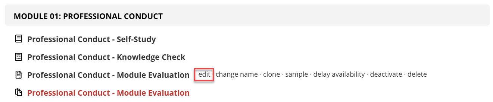
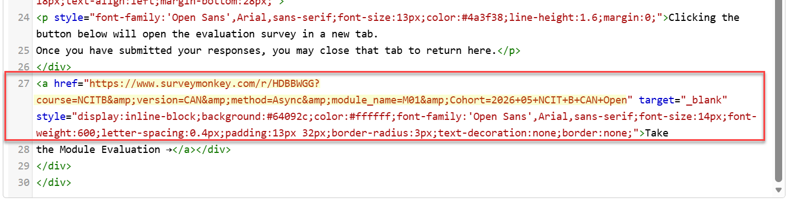
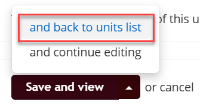
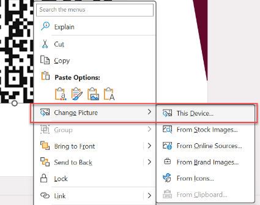

Overview
Each module in TalentLMS, asynchronous or instructor-led, contains an embedded module evaluation unit that links learners to a SurveyMonkey survey. The survey link includes custom variables that automatically tag each response with the correct course, version, delivery method, and cohort — so you never have to sort or filter responses manually after the fact.
Because the cohort variable changes with every new cohort, the link inside each module must be updated before learners access the module.
Note: This process document addresses the three types of Survey links to generate:
Virtual Asynchronous Modules (Self-Study)
Virtual Instructor-Led Sessions (Zoom sessions)
In-Person Instructor-Led Modules
Each type has a slightly different process as outlined below.
Part 1: Virtual Asynchronous Module Evaluation Process Guide
Step 1: Generate the Survey Link
The Survey Link Generator tool (Available in the Administrative Tools Dashboard under the Evaluation Reporting heading) creates a pre-populated SurveyMonkey URL that automatically passes cohort and module information through to each survey response. Open the tool and complete the following fields:

| Field | Value |
|---|---|
| Survey Type | Asynchronous Modules |
| Course | The course abbreviation (NCITS, NCITB, etc.) |
| Version | This is used to indicate US or Canadian versions of the basic course and to distinguish between NCIT Workshops (DDI, IRSM, Communications, and Ethics) |
| Method | Async |
| Module Name | The module identifier (M01, M02, etc) |
| Instructor | Leave blank |
| Cohort | Use TalentLMS Cohort Code (2026 05 NCIT B CAN Open) |
Step 2: Update the Module in TalentLMS
With the generated link copied to your clipboard, follow these steps to update the module evaluation content in TalentLMS:
| Step | Action |
|---|---|
| 1 | Navigate to the course in TalentLMS |
| 2 | Locate the evaluation module.
Note: If there are multiple evaluation modules in the list, select the one that is not red. |
| 3 | Hover over the unit and click the edit menu option  |
| 4 | Click the Code View button in the top right corner of the editor toolbar. It is the last icon on the right.
|
| 5 | Scroll to the bottom of the code editor window and locate line 27. This line begins with an <a href= tag and contains the current survey link.  Highlight the entire URL — starting from https and ending at the closing quotation mark before the word target. Do not include the quotation marks themselves in your selection |
| 6 | Paste the new link you generated in Part 1. It will replace the highlighted URL. |
| 7 | Click the Save and View dropdown button and select Back to Units List to save and exit.  |


Part 2: Virtual Instructor-Led Module Evaluation Process Guide
Step 1: Generate the Survey Link
Generate the survey link as done in Part 1 of this process guide; however, use the values provided below.
| Field | Value |
|---|---|
| Survey Type | Instructor Evaluations |
| Course | The course abbreviation (NCITS, NCITB, etc.) |
| Version | This is used to indicate US or Canadian versions of the basic course and to distinguish between NCIT Workshops (DDI, IRSM, Communications, and Ethics) |
| Method | V-ILT |
| Module Name | The module identifier (M01, M02, etc) |
| Instructor | Select the instructor’s name from the drop-down list provided. Note: If an instructor’s name is not listed, contact avance@clearhq.org |
| Cohort | Use TalentLMS Cohort Code (2026 05 NCIT B CAN Open) |
Step 2: Add the Survey Link to the Module in TalentLMS
Instructor-led modules follow the same process as asynchronous modules. With the generated link copied to your clipboard, complete Part 1, Step 2 to update the module’s evaluation unit in TalentLMS.
Modules with both instructor-led and asynchronous components: only the asynchronous evaluation link goes in the TalentLMS evaluation unit. Paste the instructor-led evaluation link in the Zoom chat near the end of the live session and ask participants to complete it.
Part 3: In-Person Instructor-Led Module Evaluation Process Guide
Step 1: Generate the Survey Link
Generate the survey link as done in Part 1 of this process guide; however, use the values provided below and generate a QR code instead of copying the link.
| Field | Value |
|---|---|
| Survey Type | Instructor Evaluations |
| Course | The course abbreviation (NCITS, NCITB, etc.) |
| Version | This is used to indicate US or Canadian versions of the basic course and to distinguish between NCIT Workshops (DDI, IRSM, Communications, and Ethics) |
| Method | IPT-ILT |
| Module Name | The module identifier (M01, M02, etc) |
| Instructor | Select the instructor’s name from the drop-down list provided. Note: If an instructor’s name is not listed, contact avance@clearhq.org |
| Cohort | Use TalentLMS Cohort Code (2026 05 NCIT B CAN Open) |
Click the Copy QR button once you have populated the necessary fields.
Note: For each QR code, re-name the file with the cohort code plus the module or session identifier.
Example: 2026-04-NCIT-B-US-Austin-TX-M01
Note: for some programs there may be more than one instructor per module. In this scenario add the instructor’s initials to the end of the file name.
Example: 2026-04-ELPR-M01-DW and 2026-04-ELPR-M01-MS
Step 2: Add the Survey QR Code to the PowerPoint Slides
| Step | Action |
|---|---|
| 1 | Locate the PowerPoint files for the program and cohort |
| 2 | In each PowerPoint file, locate the slides for the module reviews |
| 3 | Right-click on the QR code, select the Change Picture menu option, then select the This Device sub-menu option.  |
| 4 | Locate the appropriate QR code in the file explorer and click Save. |